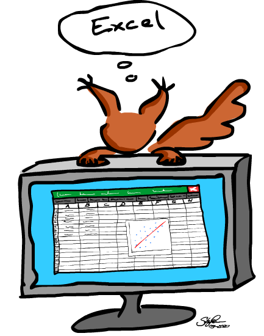
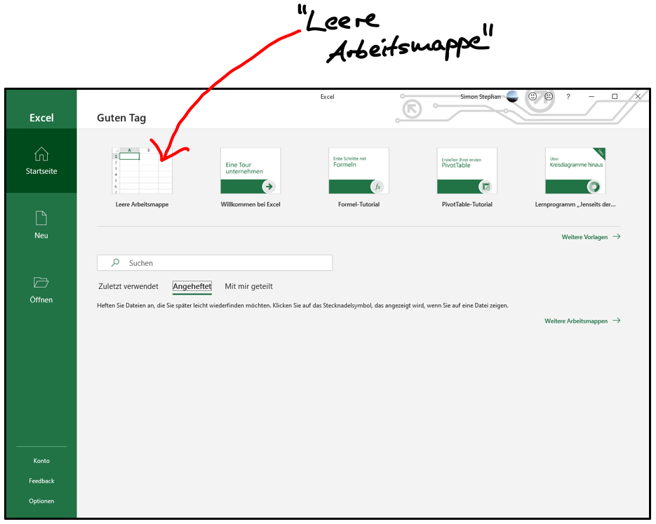
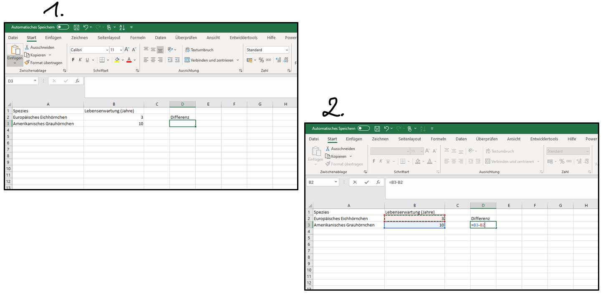
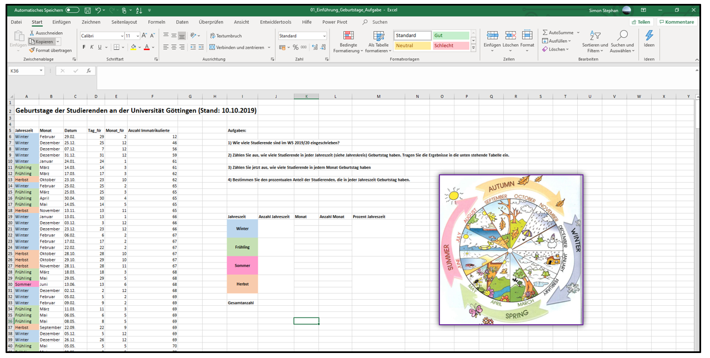

Sitzung 1: Einführung - Arbeiten mit Microsoft Excel
Für die Übungen im Modul Quantitative Methoden I benötigen Sie das Tabellenkalkulationsprogramm Microsoft Excel. Sofern Sie Excel nicht bereits auf Ihrem Rechner nutzen, können Sie als Studierende/r das Programm günstig über eine Uni-Lizenz bei studyhouse erwerben. Klicken Sie dazu einfach hier.
Eine frei verfügbare Alternative zu Microsoft Excel ist das Programm Libre Office Calc, welches Sie hier herunterladen können. Auch mit Libre Office Calc kann man die meisten Dinge machen. Die Übungen in diesem Seminar werden aber trotzdem mit Excel durchgeführt.

Erste Schritte - die Exceloberfläche
Wenn Sie Excel installiert haben und öffnen, sieht die Oberfläche zunächst so aus, wie in dem Bild unten.
Sie haben hier die Möglichkeit, aus verschiedenen “Vorlagen” zu wählen, bereits existierende Dateien aus einem Ordner heraus zu öffnen, oder ein neues Dokument zu beginnen. Excel-Dokumente heißen Arbeitsmappen. Um eine neue Arbeitsmappe zu erstellen, klicken Sie ganz einfach auf Leere Arbeitsmappe.

Die Arbeitsmappenansicht
Nachdem sie auf “Leere Arbeitsmappe” geklickt haben, gelangen Sie zur Arbeitsmappenansicht, die so aussieht, wie im Bild unten dargestellt. Im Wesentlichen sieht eine Arbeitsmappe aus wie eine riesige Tabelle, in der es jede Menge Spalten und Zeilen gibt. Spalten sind durch Buchstaben (A, B, C, …) und Zeilen durch Zahlen (1, 2, 3, …) gekennzeichnet. Die Schnittstelle zwischen einer Spalte und einer Zeile nennt man in Excel Zelle. Durch die Spalten- und Zeilenbeschriftungen kann also jede Zelle eindeutig benannt werden. Im Bild unten sind zur Verdeutlichung zwei Zellen rot markiert. Zum Beispiel befindet sich die erste rot markierte Zelle Spalte R und dort wiederum in Zeile 3. Diese Zelle heißt also R3.

Sie können mit Ihrer Maus in eine beliebe Zelle klicken. Die Zelle, die Sie anklicken, wird dann zur besseren Orientierung durch einem grünen Rahmen markiert. Wie Sie sehen können, ist im Bild die Zelle A1 markiert.
Sie können dann Einträge in eine ausgewählte Zelle hineinschreiben. Solche Einträge können entweder Text oder Zahlen sein. In den meisten Fällen werden wir dort natürlich Zahlen vorfinden, denn wir wollen ja in diesem Seminar Excel benutzen, um zu rechnen und statistische Analysen durchzuführen. Text verwendet man in der Regel, um bestimmte Spalten, Zeilen, oder Zellen mit einer Beschriftung zu versehen.
Eine erste Tabelle und eine erste Berechnung
Beispiel – Die Lebenserwartung von Eichhörnchen und Grauhörnchen:
Wir könnten jetzt zum Beispiel eine kleine Tabelle erstellen, in der wir uns die Lebenserwartungen von amerikanischen Grauhörnchen und europäischen Eichhörnchen notieren. Diese Tabelle ist in der ersten Abbildung unten dargestellt. Wie Sie dort sehen können, beträgt die durschnittliche Lebenserwartung von Eichhörnchen drei Jahre (das steht in… genau, in Zelle B2) und die von Grauhörnchen zehn Jahre (Zelle B3). Ein ziemlich großer Unterschied.
Das schöne an Excel ist, dass man damit nicht nur Dinge notieren, sondern auch damit rechnen kann. Wir könnten jetzt z.B. die Differenz der zwei notierten Lebenserwartungen berechnen und das Ergebnis in Zelle D3 hineinschreiben.

Um in Excel eine Rechnung durchzuführen (s. Bild 2), klickt man zunächst in die Zelle, in die dar Ergebnis geschrieben werden soll (in unserem Fall D3). Danach schreibt man in diese Zelle ein Gleichheitszeichen (=); das ist für Excel nämlich das Signal, dass nun gerechnet werden soll. Wir könnten jetzt also in die Zelle D3 einfach Folgendes schreiben: \(=10-3\). Wenn wir dann “Enter” drücken, wird das Ergebnis dieser Rechnung (7) in D3 geschrieben. Wir müssen die Zahlen 10 und 3 aber nicht aus unserer Tabelle ablesen und manuell eintragen. Wir können nach dem “=” auch einfach mit der Maus zuerst Zelle B3 anklicken, danach ein Minuszeichen (-) schreiben, und dann die Zelle B2 anklicken. In Bild 2 oben können Sie sehen, wie das aussieht.
Vielleicht fragen Sie sich jetzt, welchen Vorteil es haben könnte, statt den Zahlen lediglich die Koordinaten, B3 und B2, einzutragen (s. Bild 2). Ein leicht ersichtlicher Vorteil ist natürlich, dass man so vermeidet, sich zu vertippen und versehentlich eine falsche Zahl einzutragen (was bei großen Tabellen schnell passieren kann).
Ein weniger offensichtlicher aber gewaltiger Vorteil ist, dass die Ergebniszelle (D3) auf diese Weise “dynamisch” wird. Damit ist gemeint, dass sich das Ergebnis der Berechnung automatisch anpasst, wenn man in der Ausgangstabelle die Werte verändert. Stellen Sie sich vor, eine neue Studie hätte ergeben, dass europäische Eichhörnchen doch älter werden als zunächst gedacht (eine schöne Nachricht). Ändern Sie die “3” in eine “4”. Was passiert mit der berechneten Differenz? Genau, das Ergebnis wird automatisch aktualisiert (6 statt 7).
Speichern einer Arbeitsmappe
Eine so wichtige Tabelle wie unsere Hörnchenlebenserwartungstabelle darf natürlich auf keinen Fall verloren gehen. Deshalb sollte man wissen, wie man Arbeitsmappen abspeichern kann. Das funktioniert in Excel wie mit den meisten Programmen, die Sie schon kennen.Klicken Sie oben im grünen Bereich des Programms auf Datei. In dem erscheinenden Menü finden Sie die Auswahl “Speichern unter”. Damit können Sie die gegenwärtige Arbeitsmappe in einem beliebigen Ordner Ihres Rechners speichern. Am besten erstellen Sie sich einen neuen Ordner, den Sie “Quanti 1” nennen. Dort können Sie dann alle Excel-Dateien, die Sie im Verlauf dieses Semesters erstellen werden, sammeln.

Ein etwas komplexeres Beispiel
Nachdem Sie sich nun ein wenig mit der Excel-Umgebung vertraut gemacht haben, wollen wir uns jetzt zum Ende dieser Einführungssitzung noch ein etwas umfangreicheres Beispiel ansehen.
Die Geburtstage der Studierenden im Wintersemester 19/20:
Im Bild unten sehen Sie eine ziemlich große Tabelle, in der die Gebutstagsdaten aller Studierenden der Uni Göttingen aufgelistet sind, die zum Zeitpunkt des 10.10.2019 an der Universität immatrikuliert gewesen waren. Mit Hilfe der Daten in dieser Tabelle wollen wir uns jetzt noch einige sehr nützliche Excel-Funktionen ansehen.
Sie müssen sich diese Tabelle nicht selbst erstellen. Sie finden alle Materialen in einem so genannten “Online Repository”. Zur Übersicht über alle Sitzungen gelangen Sie hier. Die Excel-Datei mit dem “Geburtstage-Beispiel” können Sie direkt hier herunterladen und danach öffnen.

In Spalte C stehen die verschiedenen Geburtstagsdaten, in Spalte B der dazugehörige Monat und in Spalte A die dazugehörige Jahreszeit. In Datumsspalte C ist über die Spalten D und E noch einmal aufgeteilt (in Tag und Monat). Spalte F gibt an, wie viele Studierende an einem bestimmten Tag Geburstag haben.
Weiter rechts in der Arbeitsmappe sehen Sie eine Reihe von Aufgaben. Darunter befindet sich eine vorgefertigte Tabelle, in die die Ergebnisse eingetragen werden sollen.
Aufgabe 1) Wie viele Studierende waren im WiSe 2019/2020 eingeschrieben?
Das Ergebnis soll in Zelle J33 geschrieben werden, also in die Zelle rechts neben der Zelle, die “Gesamtanzahl” heißt. Eine Gesamtzahl lässt sich in Excel sehr schnell mit Hilfe der so genannten “Summenfunktion” ermitteln. Die Summenfunktion ist die erste Excel-Funktion, die Sie jetzt kennenlernen werden.
So gehts: klicken Sie in Zelle J33 und schreiben Sie wieder “\(=\)”. Schreiben Sie unmittelbar dahinter “SUMME” und öffnen sie eine runde Klammer, “(”. Markieren Sie nun mit ihrer Maus den Spaltenbereich in Spalte F, in der die Anzahlen der Studierenden aufgelistet sind.Sie sollten einen farbigen Rahmen um diesen Spaltenbereich herum sehen. Danach beenden Sie die begonnende Funktion mit einer geschlossenen Klammer, “)”, und drücken Enter. Sie sollten jetzt das Ergebnis sehen (30405). Im Bild unten ist das Vorgehen noch einmal verdeutlicht.

Aufgabe 2) Zählen Sie aus, wie viele Studierende in jeder Jahreszeit Geburtstag haben
Copyright © 2020 Quanti-Team. All rights reserved.